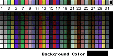

No palette is available for uncoded cels, though you can change the palette before selecting the cel type and update the document.
An 8-bit coded palette offers 32 different colors. Notice the addition of the hue bar above the numbers at the top of the palette. The numbers correlate to the hues that appear above them-32 possible colors in all. The colors below the numbers are the shades and tints of the hue above. The background color appears in the rectangle below the palette.

Figure 1: 3DO palette for an 8-bit coded cel.